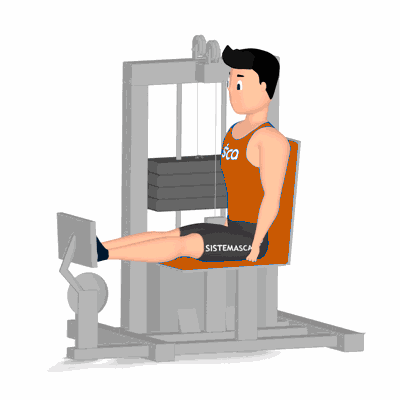

Leg Press

Exercício para fortalecimento e hipertrofia dos músculos da coxa, com enfoque aos músculos vasto laterais, mediais, reto femorais e estimulo dos músculos auxiliares, tais como, os glúteos.
Ficha Técnica
Tipo: Musculação
Grupo Muscular: Perna
Aparelho: Nenhum
Músculos: Nenhum
Como realizar
- Sente no aparelho com os joelhos flexionados;
- Posicione os pés na plataforma ligeiramente separados;
- Manter as costas restas e glúteos bem apoiados;
- Utilize as mãos para agarrar os pegadores;
- Com a força dos músculos da coxa, empurre a plataforma para frente, até que os joelhos fiquem em uma posição semiflexionada;
- Retorne lentamente à posição inicial;
- Repita os movimentos;
 RC STORE
RC STORE